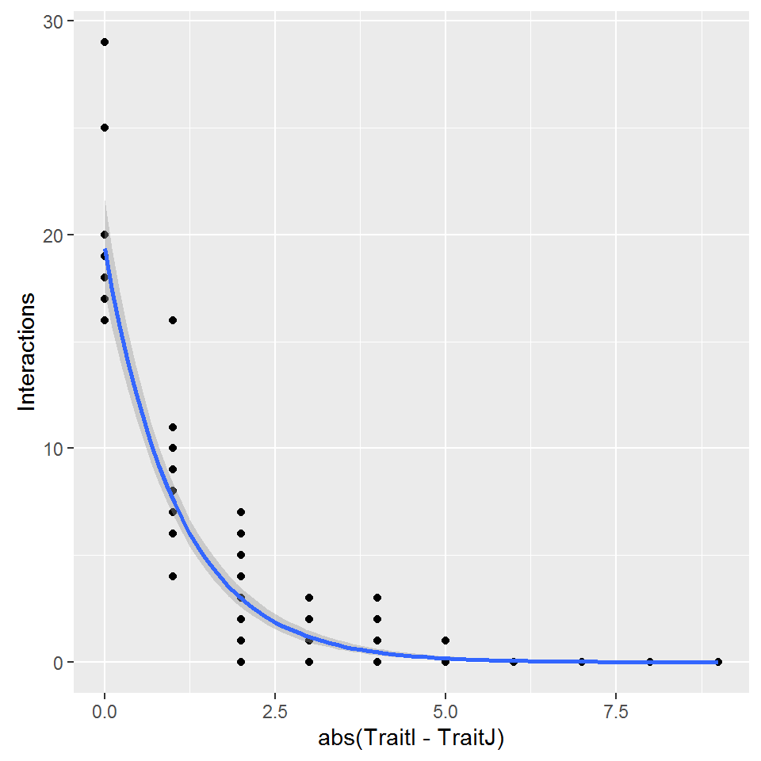
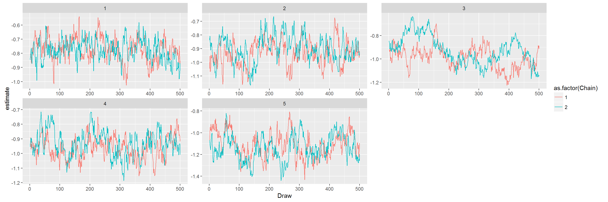
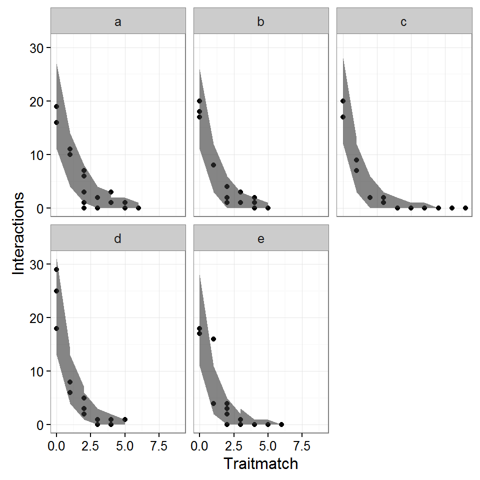
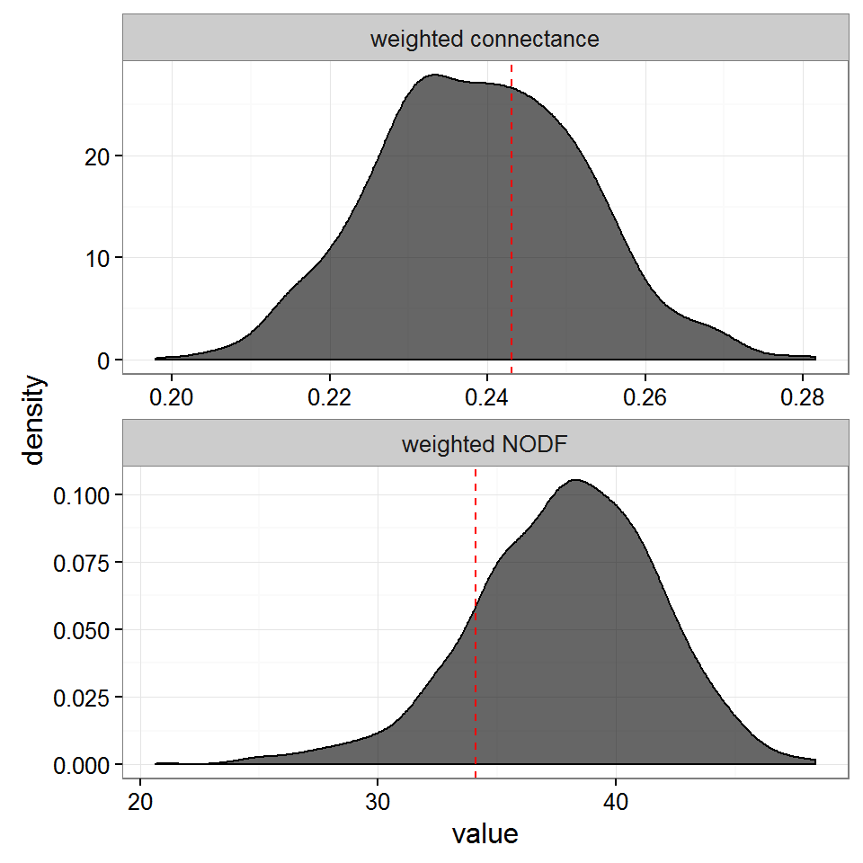

Trait-matching simulation
Ben Weinstein
Simulation
What are the data we want to simulate?
size_x = Number of level 1 size_y = Number of level 2 traits_x = Trait frame for level 1 traits_y = Trait frame for level 2 Obs = x by y matrix of visits
simA<-function(size_x,size_y,traits_x,traits_y,beta1_sigma= 0.4,alpha_sigma= 0){
#Subtract both and take absolute value, convert cm
traitmatch<-abs(sapply(traits_y,function(x) x - traits_x))
#regression slopes
#traits
beta1_mu<- -1
#species variance in slopes
beta1_sigma<- 0.1
#Species alpha_mu
alpha_mu<- 3
alpha_sigma<- 0
#species level
beta1<-rnorm(size_x,beta1_mu,beta1_sigma)
alpha<-rnorm(size_x,alpha_mu,alpha_sigma)
#for each species loop through and create a replicate dataframe
obs<-array(dim=c(size_x,size_y))
N<-array(dim=c(size_x,size_y))
#create intensities
for(x in 1:size_x){
for (y in 1:size_y){
#intensity
N[x,y]<-exp(alpha[x] + beta1[x] * traitmatch[x,y])
#draw one state
obs[x,y]<-rpois(1,N[x,y])
}
}
#draw intensity
tx<-data.frame(I=1:length(traits_x),TraitI=traits_x)
ty<-data.frame(J=1:length(traits_y),TraitJ=traits_y)
#view trait matching
dat<-melt(obs)
colnames(dat)<-c("I","J","Interactions")
dat<-merge(dat,tx)
dat<-merge(dat,ty)
#define data types, make species
dat$I<-letters[dat$I]
dat$J<-letters[dat$J]
return(dat)
}size_x = 5
size_y = 19
#Bill sizes
traits_x<-rpois(size_x,10)
#Corolla sizes
traits_y<-rpois(size_y,10)
dat<-simA(size_x=size_x,size_y=size_y,traits_x=traits_x,traits_y=traits_y)
#view heatmap
heatmap<-function(dat){
ggplot(data=dat,aes(x=I,y=J,fill=Interactions)) + geom_tile() + scale_fill_continuous(low="white",high="red")
}
heatmap(dat)
traitplot<-function(dat){
ggplot(data=dat,aes(y=Interactions,x=abs(TraitI-TraitJ))) + geom_point() + geom_smooth(aes(group=1),method="glm",method.args=list(family="poisson"))
}
traitplot(dat)
Poisson Regression
#format traitmatch as matrix
dat$Traitmatch<-abs(dat$TraitI-dat$TraitJ)
Traitmatch<-acast(data=dat,I~J,value.var="Traitmatch")
runs<-100000
#Source model
source("Bayesian/Poisson.R")
#print model
print.noquote(readLines("Bayesian//Poisson.R"))## [1]
## [2] sink("Bayesian/Poisson.jags")
## [3]
## [4] cat("
## [5] model {
## [6]
## [7] #Compute intensity for each pair of birds and plants
## [8] for (i in 1:Birds){
## [9] for (j in 1:Plants){
## [10]
## [11] #Process Model with log normal overdispersion
## [12] log(lambda[i,j])<-alpha[i] + beta1[i] * Traitmatch[i,j]
## [13] }
## [14] }
## [15]
## [16]
## [17] #Prediction
## [18] for (x in 1:Nobs){
## [19]
## [20] # Observed State
## [21] Yobs[x] ~ dpois(lambda[Bird[x],Plant[x]])
## [22]
## [23] #Assess Model Fit
## [24]
## [25] #Fit discrepancy statistics
## [26] eval[x]<-lambda[Bird[x],Plant[x]]
## [27] E[x]<-pow((Yobs[x]-eval[x]),2)/(eval[x]+0.5)
## [28]
## [29] ynew[x]~dpois(lambda[Bird[x],Plant[x]])
## [30] E.new[x]<-pow((ynew[x]-eval[x]),2)/(eval[x]+0.5)
## [31]
## [32] }
## [33]
## [34] ###Priors
## [35]
## [36] #Process Model
## [37]
## [38] #Species level priors
## [39] for (i in 1:Birds){
## [40]
## [41] #Intercept
## [42] alpha[i] ~ dnorm(alpha_mu,alpha_tau)
## [43]
## [44] #Traits slope
## [45] beta1[i] ~ dnorm(beta1_mu,beta1_tau)
## [46] }
## [47]
## [48] #Group process priors
## [49]
## [50] #Intercept
## [51] alpha_mu ~ dnorm(0,0.001)
## [52] alpha_tau ~ dunif(0,10)
## [53] alpha_sigma<-pow(1/alpha_tau,0.5)
## [54]
## [55] #Trait
## [56] beta1_mu~dnorm(0,0.001)
## [57] beta1_tau ~ dunif(0,10)
## [58] beta1_sigma<-pow(1/beta1_tau,0.5)
## [59]
## [60] #derived posterior check
## [61] fit<-sum(E[]) #Discrepancy for the observed data
## [62] fitnew<-sum(E.new[])
## [63]
## [64]
## [65] }
## [66] ",fill=TRUE)
## [67]
## [68] sink() #for parallel run
Yobs=dat$Interactions
Bird=as.numeric(as.factor(dat$I))
Plant=as.numeric(as.factor(dat$J))
Birds=length(unique(dat$I))
Traitmatch=Traitmatch
Plants=length(unique(dat$J))
Nobs<-length(Yobs)
#Parameters to track
ParsStage <- c("beta1","ynew","fit","fitnew")
#MCMC options
ni <- runs # number of draws from the posterior
nt <- 1 #thinning rate
nb <- max(0,runs-500) # number to discard for burn-in
nc <- 2 # number of chains
modelDat<-list("Yobs","Bird","Plant","Plants","Traitmatch","Birds","Nobs")
m1<-do.call(jags.parallel,list(data=modelDat,parameters.to.save=ParsStage,model.file="Bayesian/Poisson.jags",n.thin=nt, n.iter=ni,n.burnin=nb,n.chains=nc,DIC=F))parsO<-melt(m1$BUGSoutput$sims.array)
colnames(parsO)<-c("Draw","Chain","parameter","estimate")
#label species and plants
l<-levels(parsO$parameter)
#parameters to save
totrack<-m1$parameters.to.save
#assign species index to ragged frame.
sp_pl<-data.frame(parameter=l,Index=as.numeric(str_match(l,pattern="\\[(\\d+)]")[,2]),par=str_extract(l,"\\w+"))
#merge levels
pars<-merge(parsO,sp_pl)
pars<-pars[!pars$par %in% "deviance",]#view chaings
ggplot(pars[pars$par %in% c("beta1"),],aes(x=Draw,col=as.factor(Chain),y=estimate)) + geom_line() + facet_wrap(~Index,scales="free") 
Posterior predictive check
fitstat<-droplevels(pars[pars$par %in% c("fit","fitnew"),])
fitstat<-dcast(fitstat,Draw+Chain~par,value.var="estimate")
#add 1:1 line
ymin<-round(min(c(fitstat$fit,fitstat$fitnew)))
ymax<-round(max(c(fitstat$fit,fitstat$fitnew)))
ab<-data.frame(x=ymin:ymax,y=ymin:ymax)
p<-ggplot(fitstat,aes(x=fit,y=fitnew)) + geom_point() + theme_bw() + coord_equal()
psim4<-p + labs(x="Discrepancy of observed data",y="Discrepancy of replicated data") + geom_line(data=ab,aes(x=x,y=y)) + ggtitle("Simulated Data")
psim4
View simulated and predicted traitmatching
#merge the dataframes.
dat$Index<-1:nrow(dat)
#posterior distribution for each index
ypred<-pars %>% filter(par=="ynew") %>% group_by(Index) %>% summarize(mean=mean(estimate),lower=quantile(estimate,0.05),higher=quantile(estimate,0.95))
datpred<-merge(dat,ypred)
ggplot(datpred) + geom_point(aes(x=Traitmatch,y=Interactions),col="black") + geom_ribbon(aes(x=Traitmatch,ymin=higher,ymax=lower),alpha=0.6) + theme_bw()
ggplot(datpred) + geom_point(aes(x=Traitmatch,y=Interactions),col="black") + geom_ribbon(aes(x=Traitmatch,ymin=higher,ymax=lower),alpha=0.6) + theme_bw() + facet_wrap(~I)
Compute emergent statistics
makeN<-function(x){
predweb<-acast(data=x,I~J,value.var="estimate")
#calculate network statistic
nstat<-networklevel(predweb,index=c("weighted connectance","weighted NODF"))
data.frame(Metric=names(nstat),nstat)
}
#calculate network stats for each model
nstats<-pars %>% filter(par=="ynew") %>% group_by(Draw,Chain) %>% inner_join(dat) %>% do(makeN(.))
#calculate true network stat
tweb<-acast(dat,I~J,value.var="Interactions")
tstat<-networklevel(tweb,index=c("weighted connectance","weighted NODF"))
tstat<-data.frame(Metric=names(tstat),tstat)
ggplot(nstats,aes(x=nstat)) + geom_density(alpha=0.6,fill="black") + facet_wrap(~Metric,scales='free',nrow=2) + theme_bw() + geom_vline(col="red",linetype="dashed",data=tstat,aes(xintercept=tstat)) + labs(x="value")